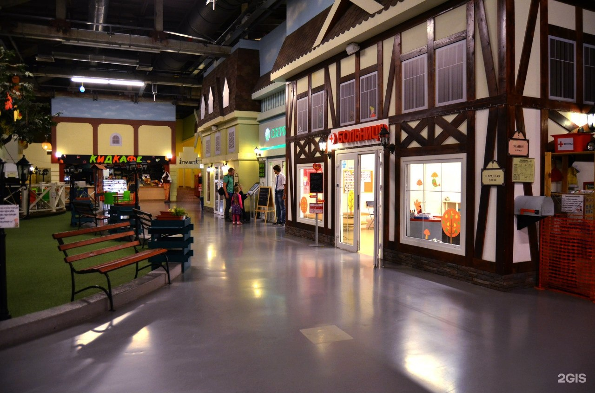
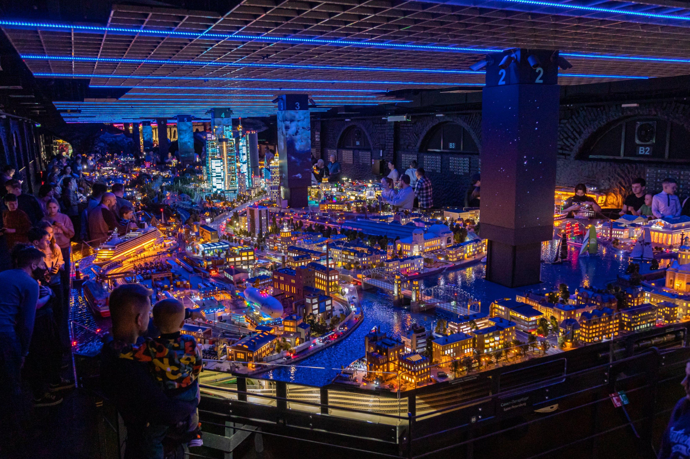

КидБург
«КидБург» — интерактивный детский город профессий и идеальное пространство для насыщенного семейного отдыха: здесь дети в игровой форме осваивают различные специальности, а родители могут весело провести время вместе с ними или отдохнуть в семейном кафе.
Адреса: Санкт‑Петербург, пр. Энгельса, д. 154А (ТРК «Гранд Каньон»), ст. метро «Проспект Просвещения» или пр. Космонавтов, д. 14 (ТРК «Питер Радуга»), ст. метро «Парк Победы».
Контакты: kidburg.ru.
Режим работы: Будни — с 12:00 до 20:00, выходные — с 10:00 до 20:00.
Средний чек: Детский билет — от 2860 рублей, взрослый билет — 750 рублей.

Гранд Макет
«Гранд Макет Россия» — грандиозный национальный шоу-музей в Санкт‑Петербурге: гигантская действующая модель России площадью 800 кв. метров в масштабе 1:87, где миниатюрные поезда и машины движутся через всю страну от Калининграда до Камчатки, а каждые 15 минут меняются день и ночь.
Адрес: Санкт‑Петербург, ул. Цветочная, д. 16, лит. Л, ст. метро «Московские ворота».
Контакты: +7 (812) 495-54-65 или grandmaket.ru.
Режим работы: Ежедневно, с 10:00 до 20:00.
Средний чек: Взрослый билет (с 14 лет) — 980 рублей, детский билет (с 3 до 13 лет) — 630 рублей.
